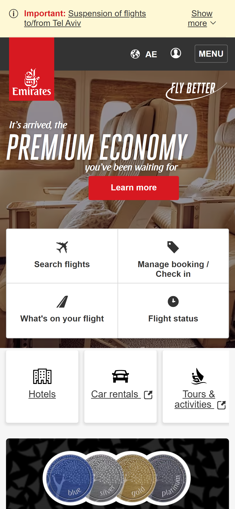

Rule of Thirds
Emirates
www.emirates.com Usually, the rule of thirds is used as a guide for arranging elements and aligning text in the design. It helps to draw attention of the user to specific elements or calls to action. For example, on the Emirates website, we can see how text is aligned according to this rule. Application of this principle helps to focus attention of the user on the most important elements. We can see how the eye naturally travels from the text to the “learn more” button.
White Space and Clean Design
Ikea
www.ikea.comWhite space is any blank or empty space surrounding elements in a design composition. There are a lot of reasons why it is important to keep the design of a website clean and have enough white space on it. A good example of the usage of this principle is Ikea website. The minimalistic design makes content easier to read and digest. The site has enough white space, which helps to structure and organize content. You can clearly see where one block of content ends and starts another.
Contrast
Nintendo
www.nintendo.comContrast as a design principle is about using opposites to capture attention and draw the eye of the user to key parts of the website. It can be done in different ways. For example, using contrasting colors or different sizes of elements. On the Nintendo website, we can see that the contrasting colors have been used to focus attention on specific elements like the demo button.